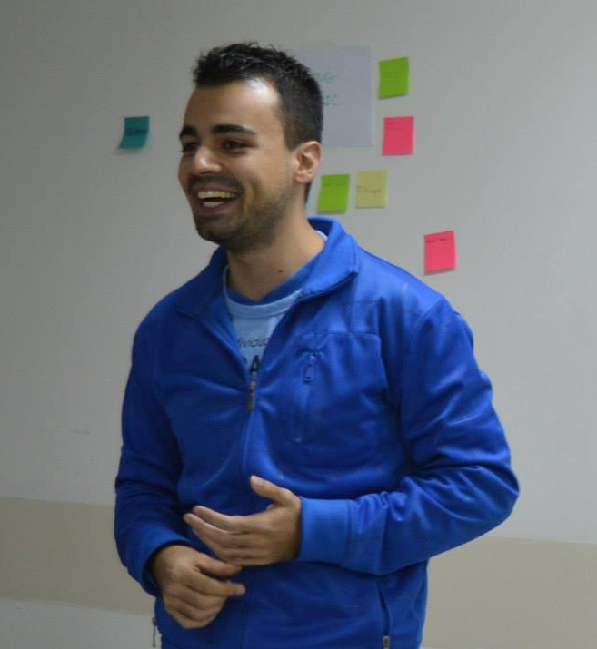

Happy Melly é uma rede global de empresas e indivíduos dedicada a formas de fazer as pessoas mais felizes no trabalho. Learning 3.0 é uma marca da Happy Melly que está revolucionando a forma com a qual profissionais criativos aprendem.
Conteúdo programático
No mundo ágil muito se fala em mudança, gestão de mudança e, principalmente, sobre o quanto as pessoas resistem à mudança. No entanto, poucos refletem que muito do que chamamos resistência tem uma ligação direta com a dificuldade com a qual as pessoas tem em aprender "o novo". Neste evento o desafiaremos a refletir se o seu foco deve estar no processo de mudança pelo qual essas pessoas passam, ou no processo de aprendizagem que as levará à nova realidade.
A Leaning 3.0 Experience entrega a melhor oportunidade para que profissionais criativos sintam o que é a aprendizagem emergente e embarquem nesse novo universo da criação de conhecimento. Apresentado em um formato completamente inovador, esta experiência - que propositalmente não chamamos de treinamento - o fará repensar sobre o papel da aprendizagem na sua vida, tendo potencial para se tornar um divisor de águas na sua carreira.
Cada participante receberá uma cópia do livro "How Creative Workers Learn" de Alexandre Magno
Construção do Learning Mosaic de cada participante
Parte 1: O Profissional Criativo
Você é um profissional criativo?
Tomando as rédeas de sua carreira
Integração Vida-Trabalho
Qual seu propósito de vida? Qual o impacto disto na sua carreira?
Parte 2: Reaprendendo a aprender
Personalizando suas experiências de aprendizagem
Produto de aprendizagem versus Processo de aprendizagem
Aprendizagem Prescritiva versus Aprendizagem Emergente
Learning 1.0, 2.0 e 3.0
Parte 3: Learning 3.0, o Sistema de Aprendizagem
LEARNING SHOT: Como promover aprendizagem na minha empresa?
Introdução do assunto e apresentação de conteúdo curado.
Conversa com convidados especiais
Learning Canvas
Criando sua própria ferramenta Learning 3.0 para utilizar na sua empresa.
Fim
Facilitadores do Learning 3.0
Caio
Cestari. O papel de facilitador, direta ou indiretamente, sempre foi uma marca registrada em
minha vida. Desde a infância ficam comigo as missões de organizar viagens, eventos com a família e até
mesmo festas com os amigos do colégio (e, claro, por envolver pessoas não é nada simples :-P)
Após minha entrada no mundo corporativo, não foi diferente: logo percebi que também tinha a missão de
ajudar meus times com os nossos problemas do dia-a-dia, e de facilitar difíceis tomadas de decisão entre
as pessoas. O que eu não percebia, até tomar contato com o Learning 3.0 e a aprendizagem emergente, é
que as respostas para esses problemas complexos não precisavam estar comigo - as pessoas engajadas em
resolvê-los sempre traziam na bagagem algo que, de alguma forma, valia a pena experimentar.
Na jornada para me tornar um facilitador do Learning 3.0, tive dois grandes desafios: o de colocar os
meus times como grandes estrelas do aprendizado deles mesmos e, principalmente, o de desapegar do
resultado desse processo - afinal, na maioria dos nossos problemas "certo" ou "errado" é apenas uma
questão de perspectiva :)
O Learning 3.0 abriu portas para que eu pudesse participar de diversos Learning Shots: alguns como
participante, outros como convidado especial, e muitos como facilitador dentro das empresas em que
trabalhei. Tive o privilégio também de dividir o conceito do L3.0 na Agile 2015, uma das maiores
conferências sobre agilidade do mundo. E, agora, o desafio é de co-facilitar o Learning 3.0 Experience,
na Virada Ágil da Agile Brazil 2015, para você!
E aí, topa o desafio de reaprender como os profissionais do conhecimento aprendem? ;-)
Yóris Linhares. É facilitador Learning 3.0 com mais de 20 anos de experiência como profissional criativo com foco em desenvolvimento de software e facilitação para o aprendizado. Mais informações em http://br.linkedin.com/in/yorisls/
Participação Especial
 Alexandre
Magno. Fundou a Adaptworks (www.adaptworks.com.br) em 2008, pouco depois de se tornar o primeiro
Certified Scrum Trainer brasileiro. Ele acumulou profunda experiência praticando scrum e métodos ágeis
em empresas dos mais diferentes setores, e se tornou uma referência no assunto. Após vender o controle
da empresa para o Emphasys Group em 2012, Magno permaneceu no seu conselho estratégico.
Alexandre
Magno. Fundou a Adaptworks (www.adaptworks.com.br) em 2008, pouco depois de se tornar o primeiro
Certified Scrum Trainer brasileiro. Ele acumulou profunda experiência praticando scrum e métodos ágeis
em empresas dos mais diferentes setores, e se tornou uma referência no assunto. Após vender o controle
da empresa para o Emphasys Group em 2012, Magno permaneceu no seu conselho estratégico.
Apaixonado pelo tema 'aprendizagem', Magno vem trabalhando desde 2011 em um projeto de pesquisa e
experimentação chamado Learning 3.0 que tem como principal meta enxergar um sistema de aprendizagem que
esteja mais alinhado com o mercado e o profissional do século 21. O resultado deste projeto vem sendo
apresentado ao mercado através de seu livro "How Creative Workers Learn", e em eventos como o Learning
Camp e os Learning Shots.
Mais Informações
Dia: 28 a 29 de novembro de 2015
Horário: 09:00 às 17:00
Local: São Paulo - SP
Investimento
| Faixa | Valor |
|---|---|
| 10 primeiros | R$ 1.000,00 |
| 10 seguintes | R$ 1.150,00 |
| 05 seguintes | R$ 1.500,00 |